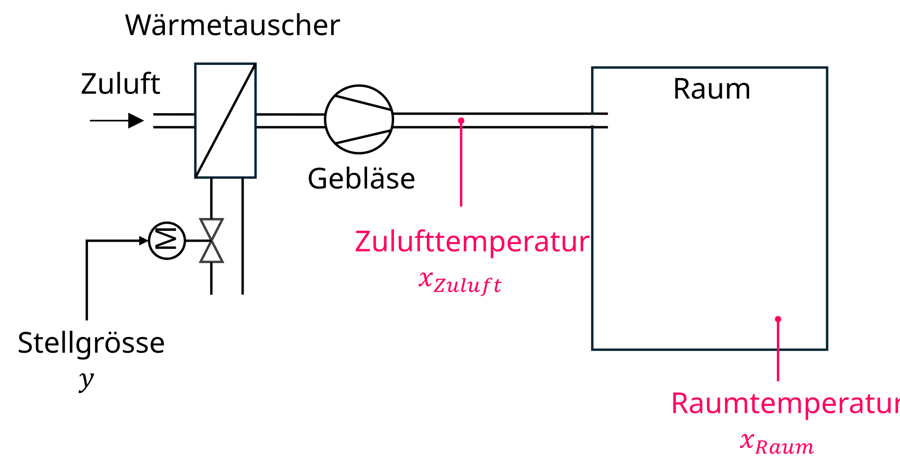
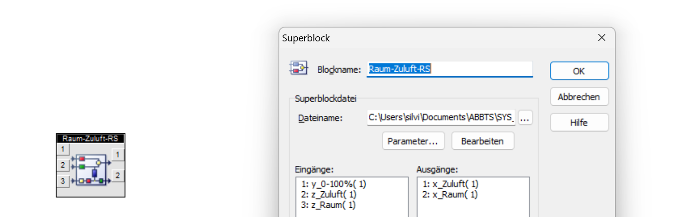
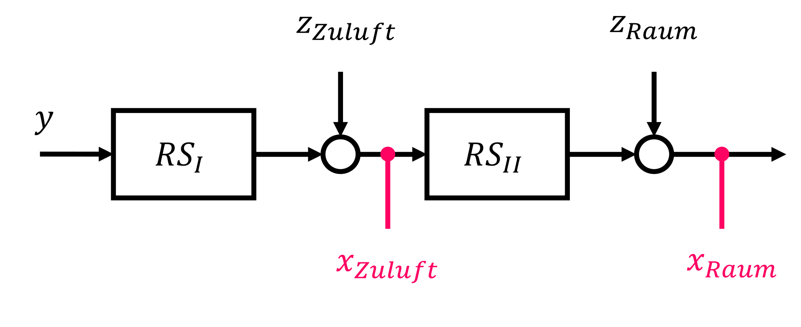

2 Kaskadenregelung
Eine Limitierung des bisher betrachteten einschleifigen Standardregelkreises besteht darin, dass sich das Führungs- und Störverhalten grundsätzlich nicht gleichzeitig optimieren lässt. Komplexere Regelkreisstrukturen, sogenannte vermaschte Regelkreise bieten diesbezüglich Vorteile.
Die erste Erweiterung, die wir anschauen, nennt sich Kaskadenregelung (auch unterlagerte Regelung genannt).
- Du kannst erklären, wie mit einer Kaskadenregelung die Dynamik eines Regelkreises verbessert werden kann.
- Du kannst beurteilen, in welchen Fällen eine Kaskadenregelung möglich bzw. sinnvoll ist.
- Du kannst eine Kaskadenregelung in BORIS entwerfen/umsetzen.
2.1 Motivation
Viele komplexe regelungstechnische Systeme weisen folgende Merkmale auf:
- Die Regelstrecke besteht aus verschiedenen Teilen, die unterschiedliche Zeitkonstanten aufweisen, d. h. es gibt z. B. einen flinken und eine trägen Teil.
- Es sollen mehrere Grössen (z. B. Position und Geschwindigkeit) gleichzeitig geregelt werden.
In solchen Fällen kann eine kaskadierte Regelung vorteilhaft sein. Dabei werden zwei oder mehr Regelkreise ineinandergeschachtelt (hintereinander geschaltet) und dazwischen jeweils eine Hilfsregelgrösse (zusätzliche Messgrösse) abgegriffen. In Abb. 2.1 ist ein kaskadierter Regelkreis mit zwei Kaskaden abgebildet.
Der oben abgebildete kaskadierte Regelkreis besteht nun aus zwei Schleifen:
- Äusserer Regelkreis mit dem Hauptregler (Master)
- Innerer Regelkreis mit dem Hilfsregler (Slave)
Das Besondere an dieser Struktur ist, dass die Ausgangsgrösse des Hauptreglers als Führungsgrösse (Sollwert) des inneren Regelkreises fungiert. Der innere Regelkreis sollte deutlich schneller sein als der äussere, dann werden Störungen im inneren Kreis weitgehend ausgeregelt bevor sie sich auf den äusseren Kreis auswirken. Der äussere Regelkreis sorgt (wie gehabt) dafür, dass die eigentliche Zielgrösse (Hauptregelgrösse) erreicht wird.
2.2 Reglerentwurf
Damit eine Kaskadenregelung möglich ist, muss die Regelstrecke in Teilstrecken aufgeteilt werden können und dazwischen eine Hilfsregelgrösse gemessen werden. Der äussere Regelkreis (Hauptregler) generiert den Sollwert für den inneren Regelkreis (→ Verschachtelung)
Der Reglerentwurf einer Kaskadenregelung erfolgt immer von innen nach aussen!
- Entwurf des Hilfsreglers REh (= innerer Regelkreis) für den ersten Streckenteil RS1 für gutes Störverhalten.
☝️ Die stationäre Genauigkeit ist beim inneren Regelkreis nicht unbedingt nötig, da diese vom äusseren Regelkreis sichergestellt werden kann.
- Entwurf des Hauptreglers RE (= äusserer Regelkreis) für die Reihenschaltung des inneren Regelkreises und dem restlichen Streckenteil RS2 für gutes Führungsverhalten.
☝️ Der innere Regelkreis kann gedanklich als einzelnes Übertragungsglied (einzelner Block) betrachtet werden.
Anmerkungen zur Kaskadenregelung:
- Für eine effektive Wirkung sollte der innere Regelkreis deutlich schneller sein als der äussere Regelkreis. Störungen können dann vom inneren Regelkreis bekämpft werden, bevor sie den äusseren Regelkreis erheblich beeinflussen.
- Durch die Kaskadenregelung verbessert sich generell das Führungs- sowie das Störverhalten, v. a. bei Störungen im ersten Streckenteil ist die Kaskadenregelung sehr effektiv.
- Eine Kaskadenregelung ist nur anwendbar, wenn die Regelstrecke aufgeteilt und dazwischen eine Messgrösse (Hilfsregelgrösse) abgegriffen werden kann. Natürlich ist diese zusätzliche Messgrösse mit Mehraufwand bzw. Kosten verbunden.
- Es sind problemlos auch mehr als zwei Kaskaden möglich.
Aufgaben
In dieser Aufgabe geht es um eine Raumtemperaturregelung, wobei eine Raumlüftung eingesetzt wird, d. h. die einströmende Luft (Zuluft) wird von einem Wärmetauscher erwärmt. Wir werden sehen, dass sich für eine solche Regelung eine Kaskadierung bestens eignet.

Das Modell der Regelstrecke liegt als Superblock vor, wobei nachfolgend die Ein- bzw. Ausgänge davon aufgelistet sind.

Die Regelstrecke besteht aus zwei Teilen, wobei dazwischen die Hilfsregelgrösse Zulufttemperatur x_{\textrm{Zuluft}} gemessen wird. Ebenfalls können optional Störgrössen simuliert werden, wobei z_{\textrm{Zuluft}} nach dem ersten Streckenteil und z_{\textrm{Raum}} nach dem zweiten Streckenteil einwirken.

Baue zuerst einen einschleifigen Regelkreis auf (Standardregelkreis). Das heisst, wir ignorieren die Messung der Zulufttemperatur (d. h. wir verwenden hier nur die Raumtemperatur x_{\textrm{Raum}}). Verwende einen Reglertyp bzw. ein Entwurfsverfahren deiner Wahl.
Verwende nun die Messung der Zulufttemperatur x_{\textrm{Zuluft}} und entwerfe eine Kaskadenregelung. Die Raumtemperatur x_{\textrm{Raum}} ist die Hauptregelgrösse und die Zulufttemperatur x_{\textrm{Zuluft}} die Hilfsregelgrösse. Verwende wiederum Regler bzw. Entwurfsverfahren deiner Wahl.
Vergleiche den einschleifigen Regelkreis mit der Kaskadenregelung sowohl hinsichtlich des Führungsverhaltens als auch des Störverhaltens und notiere jeweilige Vor- bzw. Nachteile.